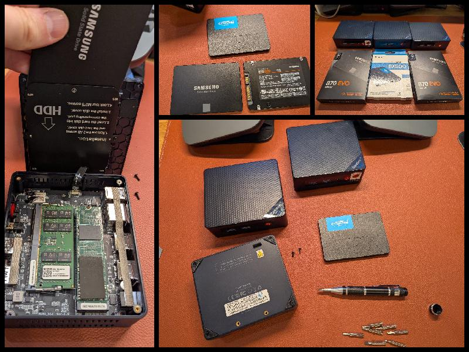
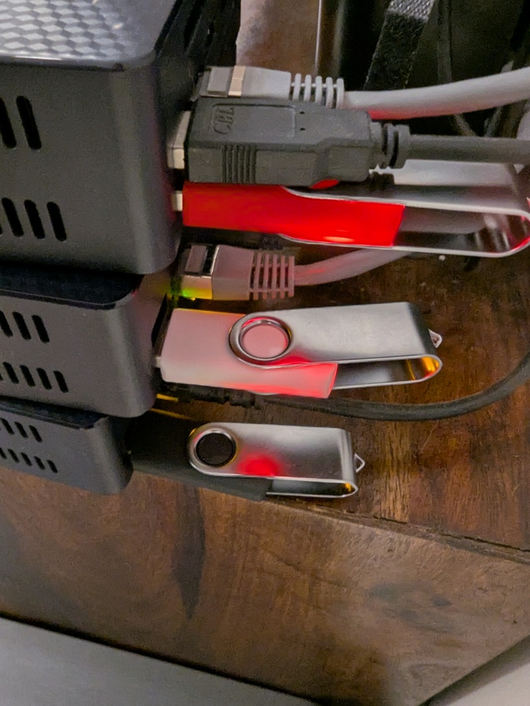
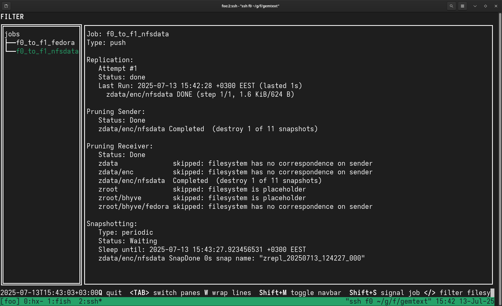

Home | Markdown | Gemini | Microblog | Street photography

paul@f0:~ % doas zpool create -m /data zdata /dev/ada1 paul@f0:~ % zpool list NAME SIZE ALLOC FREE CKPOINT EXPANDSZ FRAG CAP DEDUP HEALTH ALTROOT zdata 928G 12.1M 928G - - 0% 0% 1.00x ONLINE - zroot 472G 29.0G 443G - - 0% 6% 1.00x ONLINE - paul@f0:/ % doas camcontrol devlist <512GB SSD D910R170> at scbus0 target 0 lun 0 (pass0,ada0) <Samsung SSD 870 EVO 1TB SVT03B6Q> at scbus1 target 0 lun 0 (pass1,ada1) paul@f0:/ %
paul@f1:/ % doas camcontrol devlist <512GB SSD D910R170> at scbus0 target 0 lun 0 (pass0,ada0) <CT1000BX500SSD1 M6CR072> at scbus1 target 0 lun 0 (pass1,ada1)
paul@f0:/ % doas camcontrol devlist <512GB SSD D910R170> at scbus0 target 0 lun 0 (pass0,ada0) <Samsung SSD 870 EVO 1TB SVT03B6Q> at scbus1 target 0 lun 0 (pass1,ada1) <Generic Flash Disk 8.07> at scbus2 target 0 lun 0 (da0,pass2) paul@f0:/ %
paul@f0:/ % doas newfs /dev/da0
/dev/da0: 15000.0MB (30720000 sectors) block size 32768, fragment size 4096
using 24 cylinder groups of 625.22MB, 20007 blks, 80128 inodes.
with soft updates
super-block backups (for fsck_ffs -b #) at:
192, 1280640, 2561088, 3841536, 5121984, 6402432, 7682880, 8963328, 10243776,
11524224, 12804672, 14085120, 15365568, 16646016, 17926464, 19206912,k 20487360,
...
paul@f0:/ % echo '/dev/da0 /keys ufs rw 0 2' | doas tee -a /etc/fstab
/dev/da0 /keys ufs rw 0 2
paul@f0:/ % doas mkdir /keys
paul@f0:/ % doas mount /keys
paul@f0:/ % df | grep keys
/dev/da0 14877596 8 13687384 0% /keys

paul@f0:/keys % doas openssl rand -out /keys/f0.lan.buetow.org:bhyve.key 32 paul@f0:/keys % doas openssl rand -out /keys/f1.lan.buetow.org:bhyve.key 32 paul@f0:/keys % doas openssl rand -out /keys/f2.lan.buetow.org:bhyve.key 32 paul@f0:/keys % doas openssl rand -out /keys/f0.lan.buetow.org:zdata.key 32 paul@f0:/keys % doas openssl rand -out /keys/f1.lan.buetow.org:zdata.key 32 paul@f0:/keys % doas openssl rand -out /keys/f2.lan.buetow.org:zdata.key 32 paul@f0:/keys % doas chown root * paul@f0:/keys % doas chmod 400 * paul@f0:/keys % ls -l total 20 *r-------- 1 root wheel 32 May 25 13:07 f0.lan.buetow.org:bhyve.key *r-------- 1 root wheel 32 May 25 13:07 f1.lan.buetow.org:bhyve.key *r-------- 1 root wheel 32 May 25 13:07 f2.lan.buetow.org:bhyve.key *r-------- 1 root wheel 32 May 25 13:07 f0.lan.buetow.org:zdata.key *r-------- 1 root wheel 32 May 25 13:07 f1.lan.buetow.org:zdata.key *r-------- 1 root wheel 32 May 25 13:07 f2.lan.buetow.org:zdata.key
paul@f0:/keys % doas zfs create -o encryption=on -o keyformat=raw -o \ keylocation=file:///keys/`hostname`:zdata.key zdata/enc paul@f0:/ % zfs list | grep zdata zdata 836K 899G 96K /data zdata/enc 200K 899G 200K /data/enc paul@f0:/keys % zfs get all zdata/enc | grep -E -i '(encryption|key)' zdata/enc encryption aes-256-gcm - zdata/enc keylocation file:///keys/f0.lan.buetow.org:zdata.key local zdata/enc keyformat raw - zdata/enc encryptionroot zdata/enc - zdata/enc keystatus available -
paul@f0:/keys % doas vm stop rocky Sending ACPI shutdown to rocky paul@f0:/keys % doas vm list NAME DATASTORE LOADER CPU MEMORY VNC AUTO STATE rocky default uefi 4 14G - Yes [1] Stopped
paul@f0:/keys % doas zfs rename zroot/bhyve zroot/bhyve_old paul@f0:/keys % doas zfs set mountpoint=/mnt zroot/bhyve_old paul@f0:/keys % doas zfs snapshot zroot/bhyve_old/rocky@hamburger paul@f0:/keys % doas zfs create -o encryption=on -o keyformat=raw -o \ keylocation=file:///keys/`hostname`:bhyve.key zroot/bhyve paul@f0:/keys % doas zfs set mountpoint=/zroot/bhyve zroot/bhyve paul@f0:/keys % doas zfs set mountpoint=/zroot/bhyve/rocky zroot/bhyve/rocky
paul@f0:/keys % doas zfs send zroot/bhyve_old/rocky@hamburger | \ doas zfs recv zroot/bhyve/rocky paul@f0:/keys % doas cp -Rp /mnt/.config /zroot/bhyve/ paul@f0:/keys % doas cp -Rp /mnt/.img /zroot/bhyve/ paul@f0:/keys % doas cp -Rp /mnt/.templates /zroot/bhyve/ paul@f0:/keys % doas cp -Rp /mnt/.iso /zroot/bhyve/
paul@f0:/keys % doas sysrc zfskeys_enable=YES zfskeys_enable: -> YES paul@f0:/keys % doas vm init paul@f0:/keys % doas reboot . . . paul@f0:~ % doas vm list paul@f0:~ % doas vm list NAME DATASTORE LOADER CPU MEMORY VNC AUTO STATE rocky default uefi 4 14G 0.0.0.0:5900 Yes [1] Running (2265)
paul@f0:~ % doas zfs destroy -R zroot/bhyve_old
paul@f0:~ % zfs get all zroot/bhyve | grep -E '(encryption|key)' zroot/bhyve encryption aes-256-gcm - zroot/bhyve keylocation file:///keys/f0.lan.buetow.org:bhyve.key local zroot/bhyve keyformat raw - zroot/bhyve encryptionroot zroot/bhyve - zroot/bhyve keystatus available - paul@f0:~ % zfs get all zroot/bhyve/rocky | grep -E '(encryption|key)' zroot/bhyve/rocky encryption aes-256-gcm - zroot/bhyve/rocky keylocation none default zroot/bhyve/rocky keyformat raw - zroot/bhyve/rocky encryptionroot zroot/bhyve - zroot/bhyve/rocky keystatus available -
paul@f0:~ % doas pkg install -y zrepl
# On f0 paul@f0:~ % doas zpool list NAME SIZE ALLOC FREE CKPOINT EXPANDSZ FRAG CAP DEDUP HEALTH ALTROOT zdata 928G 1.03M 928G - - 0% 0% 1.00x ONLINE - zroot 472G 26.7G 445G - - 0% 5% 1.00x ONLINE - paul@f0:~ % doas zfs list -r zdata/enc NAME USED AVAIL REFER MOUNTPOINT zdata/enc 200K 899G 200K /data/enc # On f1 paul@f1:~ % doas zpool list NAME SIZE ALLOC FREE CKPOINT EXPANDSZ FRAG CAP DEDUP HEALTH ALTROOT zdata 928G 956K 928G - - 0% 0% 1.00x ONLINE - zroot 472G 11.7G 460G - - 0% 2% 1.00x ONLINE - paul@f1:~ % doas zfs list -r zdata/enc NAME USED AVAIL REFER MOUNTPOINT zdata/enc 200K 899G 200K /data/enc
# Check WireGuard interface IPs paul@f0:~ % ifconfig wg0 | grep inet inet 192.168.2.130 netmask 0xffffff00 paul@f1:~ % ifconfig wg0 | grep inet inet 192.168.2.131 netmask 0xffffff00
# Create the nfsdata dataset that will hold all data exposed via NFS paul@f0:~ % doas zfs create zdata/enc/nfsdata
paul@f0:~ % doas tee /usr/local/etc/zrepl/zrepl.yml <<'EOF'
global:
logging:
- type: stdout
level: info
format: human
jobs:
- name: f0_to_f1_nfsdata
type: push
connect:
type: tcp
address: "192.168.2.131:8888"
filesystems:
"zdata/enc/nfsdata": true
send:
encrypted: true
snapshotting:
type: periodic
prefix: zrepl_
interval: 1m
pruning:
keep_sender:
- type: last_n
count: 10
- type: grid
grid: 4x7d | 6x30d
regex: "^zrepl_.*"
keep_receiver:
- type: last_n
count: 10
- type: grid
grid: 4x7d | 6x30d
regex: "^zrepl_.*"
- name: f0_to_f1_freebsd
type: push
connect:
type: tcp
address: "192.168.2.131:8888"
filesystems:
"zroot/bhyve/freebsd": true
send:
encrypted: true
snapshotting:
type: periodic
prefix: zrepl_
interval: 10m
pruning:
keep_sender:
- type: last_n
count: 10
- type: grid
grid: 4x7d
regex: "^zrepl_.*"
keep_receiver:
- type: last_n
count: 10
- type: grid
grid: 4x7d
regex: "^zrepl_.*"
EOF
# First, create a dedicated sink dataset
paul@f1:~ % doas zfs create zdata/sink
paul@f1:~ % doas tee /usr/local/etc/zrepl/zrepl.yml <<'EOF'
global:
logging:
- type: stdout
level: info
format: human
jobs:
- name: sink
type: sink
serve:
type: tcp
listen: "192.168.2.131:8888"
clients:
"192.168.2.130": "f0"
recv:
placeholder:
encryption: inherit
root_fs: "zdata/sink"
EOF
# On f0 paul@f0:~ % doas sysrc zrepl_enable=YES zrepl_enable: -> YES paul@f0:~ % doas service `zrepl` start Starting zrepl. # On f1 paul@f1:~ % doas sysrc zrepl_enable=YES zrepl_enable: -> YES paul@f1:~ % doas service `zrepl` start Starting zrepl.
# On f0, check `zrepl` status (use raw mode for non-tty)
paul@f0:~ % doas pkg install jq
paul@f0:~ % doas zrepl status --mode raw | grep -A2 "Replication" | jq .
"Replication":{"StartAt":"2025-07-01T22:31:48.712143123+03:00"...
# Check if services are running
paul@f0:~ % doas service zrepl status
zrepl is running as pid 2649.
paul@f1:~ % doas service zrepl status
zrepl is running as pid 2574.
# Check for `zrepl` snapshots on source
paul@f0:~ % doas zfs list -t snapshot -r zdata/enc | grep zrepl
zdata/enc@zrepl_20250701_193148_000 0B - 176K -
# On f1, verify the replicated datasets
paul@f1:~ % doas zfs list -r zdata | grep f0
zdata/f0 576K 899G 200K none
zdata/f0/zdata 376K 899G 200K none
zdata/f0/zdata/enc 176K 899G 176K none
# Check replicated snapshots on f1
paul@f1:~ % doas zfs list -t snapshot -r zdata | grep zrepl
zdata/f0/zdata/enc@zrepl_20250701_193148_000 0B - 176K -
zdata/f0/zdata/enc@zrepl_20250701_194148_000 0B - 176K -
.
.
.
paul@f0:~ % doas zrepl status

paul@f0:~ % uptime 11:17PM up 1 min, 0 users, load averages: 0.16, 0.06, 0.02 paul@f0:~ % doas service `zrepl` status zrepl is running as pid 2366. paul@f1:~ % doas service `zrepl` status zrepl is running as pid 2309. # Check that new snapshots are being created and replicated paul@f0:~ % doas zfs list -t snapshot | grep `zrepl` | tail -2 zdata/enc/nfsdata@zrepl_20250701_202530_000 0B - 200K - zroot/bhyve/freebsd@zrepl_20250701_202530_000 0B - 2.97G - . . . paul@f1:~ % doas zfs list -t snapshot -r zdata/sink | grep 202530 zdata/sink/f0/zdata/enc/nfsdata@zrepl_20250701_202530_000 0B - 176K - zdata/sink/f0/zroot/bhyve/freebsd@zrepl_20250701_202530_000 0B - 2.97G - . . .
# On f0 - set mountpoint for the primary nfsdata paul@f0:~ % doas zfs set mountpoint=/data/nfs zdata/enc/nfsdata paul@f0:~ % doas mkdir -p /data/nfs # Verify it's mounted paul@f0:~ % df -h /data/nfs Filesystem Size Used Avail Capacity Mounted on zdata/enc/nfsdata 899G 204K 899G 0% /data/nfs
# On f1 - first check encryption status
paul@f1:~ % doas zfs get keystatus zdata/sink/f0/zdata/enc/nfsdata
NAME PROPERTY VALUE SOURCE
zdata/sink/f0/zdata/enc/nfsdata keystatus unavailable -
# Load the encryption key (using f0's key stored on the USB)
paul@f1:~ % doas zfs load-key -L file:///keys/f0.lan.buetow.org:zdata.key \
zdata/sink/f0/zdata/enc/nfsdata
# Set mountpoint and mount (same path as f0 for easier failover)
paul@f1:~ % doas mkdir -p /data/nfs
paul@f1:~ % doas zfs set mountpoint=/data/nfs zdata/sink/f0/zdata/enc/nfsdata
paul@f1:~ % doas zfs mount zdata/sink/f0/zdata/enc/nfsdata
# Make it read-only to prevent accidental writes that would break replication
paul@f1:~ % doas zfs set readonly=on zdata/sink/f0/zdata/enc/nfsdata
# Verify
paul@f1:~ % df -h /data/nfs
Filesystem Size Used Avail Capacity Mounted on
zdata/sink/f0/zdata/enc/nfsdata 896G 204K 896G 0% /data/nfs
# Option 1: Rollback to the last common snapshot (loses local changes) paul@f1:~ % doas zfs rollback zdata/sink/f0/zdata/enc/nfsdata@zrepl_20250701_204054_000 # Option 2: Make it read-only to prevent accidents again paul@f1:~ % doas zfs set readonly=on zdata/sink/f0/zdata/enc/nfsdata
paul@f0:~ % doas zfs list -o name,mountpoint,mounted | grep nfsdata zdata/enc/nfsdata /data/nfs yes
paul@f0:~ % doas zfs get keystatus zdata/enc/nfsdata NAME PROPERTY VALUE SOURCE zdata/enc/nfsdata keystatus available - # If "unavailable", load the key: paul@f0:~ % doas zfs load-key -L file:///keys/f0.lan.buetow.org:zdata.key zdata/enc/nfsdata paul@f0:~ % doas zfs mount zdata/enc/nfsdata
paul@f0:~ % ls -la /data/nfs/.zfs/snapshot/zrepl_*/
# On f0 - configure all encrypted datasets paul@f0:~ % doas sysrc zfskeys_enable=YES zfskeys_enable: YES -> YES paul@f0:~ % doas sysrc zfskeys_datasets="zdata/enc zdata/enc/nfsdata zroot/bhyve" zfskeys_datasets: -> zdata/enc zdata/enc/nfsdata zroot/bhyve # Set correct key locations for all datasets paul@f0:~ % doas zfs set \ keylocation=file:///keys/f0.lan.buetow.org:zdata.key zdata/enc/nfsdata # On f1 - include the replicated dataset paul@f1:~ % doas sysrc zfskeys_enable=YES zfskeys_enable: YES -> YES paul@f1:~ % doas sysrc \ zfskeys_datasets="zdata/enc zroot/bhyve zdata/sink/f0/zdata/enc/nfsdata" zfskeys_datasets: -> zdata/enc zroot/bhyve zdata/sink/f0/zdata/enc/nfsdata # Set key location for replicated dataset paul@f1:~ % doas zfs set \ keylocation=file:///keys/f0.lan.buetow.org:zdata.key zdata/sink/f0/zdata/enc/nfsdata
# Check service status on both f0 and f1 paul@f0:~ % doas service zrepl status paul@f1:~ % doas service zrepl status # If not running, start the service paul@f0:~ % doas service zrepl start paul@f1:~ % doas service zrepl start
# Check detailed status (use --mode raw for non-tty environments) paul@f0:~ % doas zrepl status --mode raw # Look for error messages in the replication section # Common errors include "no common snapshot" or connection failures
no common snapshot or suitable bookmark between sender and receiver
# First, identify the destination dataset on f1 paul@f1:~ % doas zfs list | grep sink # Check existing snapshots on the problematic dataset paul@f1:~ % doas zfs list -t snapshot | grep nfsdata # If you see snapshots with different naming (e.g., @daily-*, @weekly-*) # these conflict with zrepl's @zrepl_* snapshots # Destroy the entire destination dataset to allow clean replication paul@f1:~ % doas zfs destroy -r zdata/sink/f0/zdata/enc/nfsdata # For VM replication, do the same for the freebsd dataset paul@f1:~ % doas zfs destroy -r zdata/sink/f0/zroot/bhyve/freebsd # Wake up zrepl to start fresh replication paul@f0:~ % doas zrepl signal wakeup f0_to_f1_nfsdata paul@f0:~ % doas zrepl signal wakeup f0_to_f1_freebsd # Check replication status paul@f0:~ % doas zrepl status --mode raw
# Look for "stepping" state and active zfs send processes paul@f0:~ % doas zrepl status --mode raw | grep -A5 "State.*stepping" # Check for active ZFS commands paul@f0:~ % doas zrepl status --mode raw | grep -A10 "ZFSCmds.*Active" # Monitor progress - bytes replicated should be increasing paul@f0:~ % doas zrepl status --mode raw | grep BytesReplicated
# Test connectivity between nodes paul@f0:~ % nc -zv 192.168.2.131 8888 # Check if zrepl is listening on f1 paul@f1:~ % doas netstat -an | grep 8888 # Verify WireGuard tunnel is working paul@f0:~ % ping 192.168.2.131
# Verify encryption keys are available on both nodes
paul@f0:~ % doas zfs get keystatus zdata/enc/nfsdata
paul@f1:~ % doas zfs get keystatus zdata/sink/f0/zdata/enc/nfsdata
# Load keys if unavailable
paul@f1:~ % doas zfs load-key -L file:///keys/f0.lan.buetow.org:zdata.key \
zdata/sink/f0/zdata/enc/nfsdata
# Monitor replication progress (run repeatedly to check status) paul@f0:~ % doas zrepl status --mode raw | grep -A10 BytesReplicated # Or install watch from ports and use it paul@f0:~ % doas pkg install watch paul@f0:~ % watch -n 5 'doas zrepl status --mode raw | grep -A10 BytesReplicated' # Check for new snapshots being created paul@f0:~ % doas zfs list -t snapshot | grep zrepl | tail -5 # Verify snapshots appear on receiver paul@f1:~ % doas zfs list -t snapshot -r zdata/sink | grep zrepl | tail -5
# On f0 - The virtual IP 192.168.1.138 will float between f0 and f1 ifconfig_re0_alias0="inet vhid 1 pass testpass alias 192.168.1.138/32" # On f1 - Higher advskew means lower priority, so f0 wins elections ifconfig_re0_alias0="inet vhid 1 advskew 100 pass testpass alias 192.168.1.138/32"
192.168.2.138 f3s-storage-ha f3s-storage-ha.wg0 f3s-storage-ha.wg0.wan.buetow.org fd42:beef:cafe:2::138 f3s-storage-ha f3s-storage-ha.wg0 f3s-storage-ha.wg0.wan.buetow.org
paul@f0:~ % cat <<END | doas tee -a /etc/devd.conf
notify 0 {
match "system" "CARP";
match "subsystem" "[0-9]+@[0-9a-z.]+";
match "type" "(MASTER|BACKUP)";
action "/usr/local/bin/carpcontrol.sh $subsystem $type";
};
END
paul@f0:~ % doas service devd restart
paul@f0:~ % doas tee /usr/local/bin/carpcontrol.sh <<'EOF'
#!/bin/sh
# CARP state change control script
case "$2" in
MASTER)
logger "CARP state changed to MASTER, starting services"
;;
BACKUP)
logger "CARP state changed to BACKUP, stopping services"
;;
*)
logger "CARP state changed to $2 (unhandled)"
;;
esac
EOF
paul@f0:~ % doas chmod +x /usr/local/bin/carpcontrol.sh
# Copy the same script to f1
paul@f0:~ % scp /usr/local/bin/carpcontrol.sh f1:/tmp/
paul@f1:~ % doas mv /tmp/carpcontrol.sh /usr/local/bin/
paul@f1:~ % doas chmod +x /usr/local/bin/carpcontrol.sh
paul@f0:~ % echo 'carp_load="YES"' | doas tee -a /boot/loader.conf carp_load="YES" paul@f1:~ % echo 'carp_load="YES"' | doas tee -a /boot/loader.conf carp_load="YES"
paul@f0:~ % doas sysrc nfs_server_enable=YES nfs_server_enable: YES -> YES paul@f0:~ % doas sysrc nfsv4_server_enable=YES nfsv4_server_enable: YES -> YES paul@f0:~ % doas sysrc nfsuserd_enable=YES nfsuserd_enable: YES -> YES paul@f0:~ % doas sysrc nfsuserd_flags="-domain lan.buetow.org" nfsuserd_flags: "" -> "-domain lan.buetow.org" paul@f0:~ % doas sysrc mountd_enable=YES mountd_enable: NO -> YES paul@f0:~ % doas sysrc rpcbind_enable=YES rpcbind_enable: NO -> YES
# First, ensure the dataset is mounted paul@f0:~ % doas zfs get mounted zdata/enc/nfsdata NAME PROPERTY VALUE SOURCE zdata/enc/nfsdata mounted yes - # Create the k3svolumes directory paul@f0:~ % doas mkdir -p /data/nfs/k3svolumes paul@f0:~ % doas chmod 755 /data/nfs/k3svolumes
paul@f0:~ % doas tee /etc/exports <<'EOF' V4: /data/nfs -sec=sys /data/nfs -alldirs -maproot=root -network 127.0.0.1 -mask 255.255.255.255 EOF
paul@f0:~ % doas service rpcbind start Starting rpcbind. paul@f0:~ % doas service mountd start Starting mountd. paul@f0:~ % doas service nfsd start Starting nfsd. paul@f0:~ % doas service nfsuserd start Starting nfsuserd.
CARP VIP (192.168.1.138)
|
f0 (MASTER) ←---------→|←---------→ f1 (BACKUP)
stunnel:2323 | stunnel:stopped
nfsd:2049 | nfsd:stopped
|
Clients connect here
# On f0 - Create CA
paul@f0:~ % doas mkdir -p /usr/local/etc/stunnel/ca
paul@f0:~ % cd /usr/local/etc/stunnel/ca
paul@f0:~ % doas openssl genrsa -out ca-key.pem 4096
paul@f0:~ % doas openssl req -new -x509 -days 3650 -key ca-key.pem -out ca-cert.pem \
-subj '/C=US/ST=State/L=City/O=F3S Storage/CN=F3S Stunnel CA'
# Create server certificate
paul@f0:~ % cd /usr/local/etc/stunnel
paul@f0:~ % doas openssl genrsa -out server-key.pem 4096
paul@f0:~ % doas openssl req -new -key server-key.pem -out server.csr \
-subj '/C=US/ST=State/L=City/O=F3S Storage/CN=f3s-storage-ha.lan'
paul@f0:~ % doas openssl x509 -req -days 3650 -in server.csr -CA ca/ca-cert.pem \
-CAkey ca/ca-key.pem -CAcreateserial -out server-cert.pem
# Create client certificates for authorised clients
paul@f0:~ % cd /usr/local/etc/stunnel/ca
paul@f0:~ % doas sh -c 'for client in r0 r1 r2 earth; do
openssl genrsa -out ${client}-key.pem 4096
openssl req -new -key ${client}-key.pem -out ${client}.csr \
-subj "/C=US/ST=State/L=City/O=F3S Storage/CN=${client}.lan.buetow.org"
openssl x509 -req -days 3650 -in ${client}.csr -CA ca-cert.pem \
-CAkey ca-key.pem -CAcreateserial -out ${client}-cert.pem
# Combine cert and key into a single file for stunnel client
cat ${client}-cert.pem ${client}-key.pem > ${client}-stunnel.pem
done'
# Install stunnel paul@f0:~ % doas pkg install -y stunnel # Configure stunnel server with client certificate authentication paul@f0:~ % doas tee /usr/local/etc/stunnel/stunnel.conf <<'EOF' cert = /usr/local/etc/stunnel/server-cert.pem key = /usr/local/etc/stunnel/server-key.pem setuid = stunnel setgid = stunnel [nfs-tls] accept = 192.168.1.138:2323 connect = 127.0.0.1:2049 CAfile = /usr/local/etc/stunnel/ca/ca-cert.pem verify = 2 requireCert = yes EOF # Enable and start stunnel paul@f0:~ % doas sysrc stunnel_enable=YES stunnel_enable: -> YES paul@f0:~ % doas service stunnel start Starting stunnel. # Restart stunnel to apply the CARP VIP binding paul@f0:~ % doas service stunnel restart Stopping stunnel. Starting stunnel.
paul@f1:~ % doas sysrc nfs_server_enable=YES nfs_server_enable: NO -> YES paul@f1:~ % doas sysrc nfsv4_server_enable=YES nfsv4_server_enable: NO -> YES paul@f1:~ % doas sysrc nfsuserd_enable=YES nfsuserd_enable: NO -> YES paul@f1:~ % doas sysrc mountd_enable=YES mountd_enable: NO -> YES paul@f1:~ % doas sysrc rpcbind_enable=YES rpcbind_enable: NO -> YES paul@f1:~ % doas tee /etc/exports <<'EOF' V4: /data/nfs -sec=sys /data/nfs -alldirs -maproot=root -network 127.0.0.1 -mask 255.255.255.255 EOF paul@f1:~ % doas service rpcbind start Starting rpcbind. paul@f1:~ % doas service mountd start Starting mountd. paul@f1:~ % doas service nfsd start Starting nfsd. paul@f1:~ % doas service nfsuserd start Starting nfsuserd.
# Install stunnel paul@f1:~ % doas pkg install -y stunnel # Copy certificates from f0 paul@f0:~ % doas tar -cf /tmp/stunnel-certs.tar \ -C /usr/local/etc/stunnel server-cert.pem server-key.pem ca paul@f0:~ % scp /tmp/stunnel-certs.tar f1:/tmp/ paul@f1:~ % cd /usr/local/etc/stunnel && doas tar -xf /tmp/stunnel-certs.tar # Configure stunnel server on f1 with client certificate authentication paul@f1:~ % doas tee /usr/local/etc/stunnel/stunnel.conf <<'EOF' cert = /usr/local/etc/stunnel/server-cert.pem key = /usr/local/etc/stunnel/server-key.pem setuid = stunnel setgid = stunnel [nfs-tls] accept = 192.168.1.138:2323 connect = 127.0.0.1:2049 CAfile = /usr/local/etc/stunnel/ca/ca-cert.pem verify = 2 requireCert = yes EOF # Enable and start stunnel paul@f1:~ % doas sysrc stunnel_enable=YES stunnel_enable: -> YES paul@f1:~ % doas service stunnel start Starting stunnel. # Restart stunnel to apply the CARP VIP binding paul@f1:~ % doas service stunnel restart Stopping stunnel. Starting stunnel.
# Create CARP control script on both f0 and f1
paul@f0:~ % doas tee /usr/local/bin/carpcontrol.sh <<'EOF'
#!/bin/sh
# CARP state change control script
HOSTNAME=`hostname`
if [ ! -f /data/nfs/nfs.DO_NOT_REMOVE ]; then
logger '/data/nfs not mounted, mounting it now!'
if [ "$HOSTNAME" = 'f0.lan.buetow.org' ]; then
zfs load-key -L file:///keys/f0.lan.buetow.org:zdata.key zdata/enc/nfsdata
zfs set mountpoint=/data/nfs zdata/enc/nfsdata
else
zfs load-key -L file:///keys/f0.lan.buetow.org:zdata.key zdata/sink/f0/zdata/enc/nfsdata
zfs set mountpoint=/data/nfs zdata/sink/f0/zdata/enc/nfsdata
zfs mount zdata/sink/f0/zdata/enc/nfsdata
zfs set readonly=on zdata/sink/f0/zdata/enc/nfsdata
fi
service nfsd stop 2>&1
service mountd stop 2>&1
fi
case "$2" in
MASTER)
logger "CARP state changed to MASTER, starting services"
service rpcbind start >/dev/null 2>&1
service mountd start >/dev/null 2>&1
service nfsd start >/dev/null 2>&1
service nfsuserd start >/dev/null 2>&1
service stunnel restart >/dev/null 2>&1
logger "CARP MASTER: NFS and stunnel services started"
;;
BACKUP)
logger "CARP state changed to BACKUP, stopping services"
service stunnel stop >/dev/null 2>&1
service nfsd stop >/dev/null 2>&1
service mountd stop >/dev/null 2>&1
service nfsuserd stop >/dev/null 2>&1
logger "CARP BACKUP: NFS and stunnel services stopped"
;;
*)
logger "CARP state changed to $2 (unhandled)"
;;
esac
EOF
paul@f0:~ % doas chmod +x /usr/local/bin/carpcontrol.sh
# Create the CARP management script
paul@f0:~ % doas tee /usr/local/bin/carp <<'EOF'
#!/bin/sh
# CARP state management script
# Usage: carp [master|backup|auto-failback enable|auto-failback disable]
# Without arguments: shows current state
# Find the interface with CARP configured
CARP_IF=$(ifconfig -l | xargs -n1 | while read if; do
ifconfig "$if" 2>/dev/null | grep -q "carp:" && echo "$if" && break
done)
if [ -z "$CARP_IF" ]; then
echo "Error: No CARP interface found"
exit 1
fi
# Get CARP VHID
VHID=$(ifconfig "$CARP_IF" | grep "carp:" | sed -n 's/.*vhid \([0-9]*\).*/\1/p')
if [ -z "$VHID" ]; then
echo "Error: Could not determine CARP VHID"
exit 1
fi
# Function to get the current state
get_state() {
ifconfig "$CARP_IF" | grep "carp:" | awk '{print $2}'
}
# Check for auto-failback block file
BLOCK_FILE="/data/nfs/nfs.NO_AUTO_FAILBACK"
check_auto_failback() {
if [ -f "$BLOCK_FILE" ]; then
echo "WARNING: Auto-failback is DISABLED (file exists: $BLOCK_FILE)"
fi
}
# Main logic
case "$1" in
"")
# No argument - show current state
STATE=$(get_state)
echo "CARP state on $CARP_IF (vhid $VHID): $STATE"
check_auto_failback
;;
master)
# Force to MASTER state
echo "Setting CARP to MASTER state..."
ifconfig "$CARP_IF" vhid "$VHID" state master
sleep 1
STATE=$(get_state)
echo "CARP state on $CARP_IF (vhid $VHID): $STATE"
check_auto_failback
;;
backup)
# Force to BACKUP state
echo "Setting CARP to BACKUP state..."
ifconfig "$CARP_IF" vhid "$VHID" state backup
sleep 1
STATE=$(get_state)
echo "CARP state on $CARP_IF (vhid $VHID): $STATE"
check_auto_failback
;;
auto-failback)
case "$2" in
enable)
if [ -f "$BLOCK_FILE" ]; then
rm "$BLOCK_FILE"
echo "Auto-failback ENABLED (removed $BLOCK_FILE)"
else
echo "Auto-failback was already enabled"
fi
;;
disable)
if [ ! -f "$BLOCK_FILE" ]; then
touch "$BLOCK_FILE"
echo "Auto-failback DISABLED (created $BLOCK_FILE)"
else
echo "Auto-failback was already disabled"
fi
;;
*)
echo "Usage: $0 auto-failback [enable|disable]"
echo " enable: Remove block file to allow automatic failback"
echo " disable: Create block file to prevent automatic failback"
exit 1
;;
esac
;;
*)
echo "Usage: $0 [master|backup|auto-failback enable|auto-failback disable]"
echo " Without arguments: show current CARP state"
echo " master: force this node to become CARP MASTER"
echo " backup: force this node to become CARP BACKUP"
echo " auto-failback enable: allow automatic failback to f0"
echo " auto-failback disable: prevent automatic failback to f0"
exit 1
;;
esac
EOF
paul@f0:~ % doas chmod +x /usr/local/bin/carp
# Copy to f1 as well
paul@f0:~ % scp /usr/local/bin/carp f1:/tmp/
paul@f1:~ % doas cp /tmp/carp /usr/local/bin/carp && doas chmod +x /usr/local/bin/carp
# Check current CARP state paul@f0:~ % doas carp CARP state on re0 (vhid 1): MASTER # If auto-failback is disabled, you'll see a warning paul@f0:~ % doas carp CARP state on re0 (vhid 1): MASTER WARNING: Auto-failback is DISABLED (file exists: /data/nfs/nfs.NO_AUTO_FAILBACK) # Force f0 to become BACKUP (triggers failover to f1) paul@f0:~ % doas carp backup Setting CARP to BACKUP state... CARP state on re0 (vhid 1): BACKUP # Disable auto-failback (useful for maintenance) paul@f0:~ % doas carp auto-failback disable Auto-failback DISABLED (created /data/nfs/nfs.NO_AUTO_FAILBACK) # Enable auto-failback paul@f0:~ % doas carp auto-failback enable Auto-failback ENABLED (removed /data/nfs/nfs.NO_AUTO_FAILBACK)
paul@f0:~ % doas tee /usr/local/bin/carp-auto-failback.sh <<'EOF'
#!/bin/sh
# CARP automatic failback script for f0
# Ensures f0 reclaims MASTER role after reboot when storage is ready
LOGFILE="/var/log/carp-auto-failback.log"
MARKER_FILE="/data/nfs/nfs.DO_NOT_REMOVE"
BLOCK_FILE="/data/nfs/nfs.NO_AUTO_FAILBACK"
log_message() {
echo "$(date '+%Y-%m-%d %H:%M:%S') - $1" >> "$LOGFILE"
}
# Check if we're already MASTER
CURRENT_STATE=$(/usr/local/bin/carp | awk '{print $NF}')
if [ "$CURRENT_STATE" = "MASTER" ]; then
exit 0
fi
# Check if /data/nfs is mounted
if ! mount | grep -q "on /data/nfs "; then
log_message "SKIP: /data/nfs not mounted"
exit 0
fi
# Check if the marker file exists
# (identifies that the ZFS data set is properly mounted)
if [ ! -f "$MARKER_FILE" ]; then
log_message "SKIP: Marker file $MARKER_FILE not found"
exit 0
fi
# Check if failback is blocked (for maintenance)
if [ -f "$BLOCK_FILE" ]; then
log_message "SKIP: Failback blocked by $BLOCK_FILE"
exit 0
fi
# All conditions met - promote to MASTER
log_message "CONDITIONS MET: Promoting to MASTER (was $CURRENT_STATE)"
/usr/local/bin/carp master
# Log result
sleep 2
NEW_STATE=$(/usr/local/bin/carp | awk '{print $NF}')
log_message "Failback complete: State is now $NEW_STATE"
# If successful, log to the system log too
if [ "$NEW_STATE" = "MASTER" ]; then
logger "CARP: f0 automatically reclaimed MASTER role"
fi
EOF
paul@f0:~ % doas chmod +x /usr/local/bin/carp-auto-failback.sh
paul@f0:~ % doas touch /data/nfs/nfs.DO_NOT_REMOVE
paul@f0:~ % echo "* * * * * /usr/local/bin/carp-auto-failback.sh" | doas crontab -
paul@f0:~ % doas carp auto-failback disable Auto-failback DISABLED (created /data/nfs/nfs.NO_AUTO_FAILBACK)
paul@f0:~ % doas carp auto-failback enable Auto-failback ENABLED (removed /data/nfs/nfs.NO_AUTO_FAILBACK)
paul@f0:~ % doas carp CARP state on re0 (vhid 1): MASTER # If disabled, you'll see: WARNING: Auto-failback is DISABLED
# Install stunnel on client (example for `r0`) [root@r0 ~]# dnf install -y stunnel nfs-utils # Copy client certificate and CA certificate from f0 [root@r0 ~]# scp f0:/usr/local/etc/stunnel/ca/r0-stunnel.pem /etc/stunnel/ [root@r0 ~]# scp f0:/usr/local/etc/stunnel/ca/ca-cert.pem /etc/stunnel/ # Configure stunnel client with certificate authentication [root@r0 ~]# tee /etc/stunnel/stunnel.conf <<'EOF' cert = /etc/stunnel/r0-stunnel.pem CAfile = /etc/stunnel/ca-cert.pem client = yes verify = 2 [nfs-ha] accept = 127.0.0.1:2323 connect = 192.168.1.138:2323 EOF # Enable and start stunnel [root@r0 ~]# systemctl enable --now stunnel # Repeat for r1 and r2 with their respective certificates
[General] Domain = lan.buetow.org . . .
[root@r0 ~]# echo 'fs.inotify.max_user_instances = 512' > /etc/sysctl.d/99-inotify.conf [root@r0 ~]# sysctl -w fs.inotify.max_user_instances=512
[root@r0 ~]# systemctl start nfs-idmapd [root@r0 ~]# systemctl enable --now nfs-client.target
# Create a mount point [root@r0 ~]# mkdir -p /data/nfs/k3svolumes # Mount through stunnel (using localhost and NFSv4) [root@r0 ~]# mount -t nfs4 -o port=2323 127.0.0.1:/k3svolumes /data/nfs/k3svolumes # Verify mount [root@r0 ~]# mount | grep k3svolumes 127.0.0.1:/k3svolumes on /data/nfs/k3svolumes type nfs4 (rw,relatime,vers=4.2,rsize=131072,wsize=131072, namlen=255,hard,proto=tcp,port=2323,timeo=600,retrans=2,sec=sys, clientaddr=127.0.0.1,local_lock=none,addr=127.0.0.1) # For persistent mount, add to /etc/fstab: 127.0.0.1:/k3svolumes /data/nfs/k3svolumes nfs4 port=2323,_netdev,soft,timeo=10,retrans=2,intr 0 0
# On f0 (current MASTER) - trigger failover
paul@f0:~ % doas ifconfig re0 vhid 1 state backup
# On f1 - verify it becomes MASTER
paul@f1:~ % ifconfig re0 | grep carp
inet 192.168.1.138 netmask 0xffffffff broadcast 192.168.1.138 vhid 1
# Check stunnel is now listening on f1
paul@f1:~ % doas sockstat -l | grep 2323
stunnel stunnel 4567 3 tcp4 192.168.1.138:2323 *:*
# On client - verify NFS mount still works
[root@r0 ~]# ls /data/nfs/k3svolumes/
[root@r0 ~]# echo "Test after failover" > /data/nfs/k3svolumes/failover-test.txt
# Force unmount and remount [root@r0 ~]# umount -f /data/nfs/k3svolumes [root@r0 ~]# mount /data/nfs/k3svolumes
[root@r0 ~]# cat > /usr/local/bin/check-nfs-mount.sh << 'EOF'
#!/bin/bash
# Fast NFS mount health monitor - runs every 10 seconds via systemd timer
MOUNT_POINT="/data/nfs/k3svolumes"
LOCK_FILE="/var/run/nfs-mount-check.lock"
# Use a lock file to prevent concurrent runs
if [ -f "$LOCK_FILE" ]; then
exit 0
fi
touch "$LOCK_FILE"
trap "rm -f $LOCK_FILE" EXIT
MOUNT_FIXED=0
fix_mount () {
echo "Attempting to remount NFS mount $MOUNT_POINT"
if mount -o remount -f "$MOUNT_POINT" 2>/dev/null; then
echo "Remount command issued for $MOUNT_POINT"
else
echo "Failed to remount NFS mount $MOUNT_POINT"
fi
echo "Checking if $MOUNT_POINT is a mountpoint"
if mountpoint "$MOUNT_POINT" >/dev/null 2>&1; then
echo "$MOUNT_POINT is a valid mountpoint"
else
echo "$MOUNT_POINT is not a valid mountpoint, attempting mount"
if mount "$MOUNT_POINT"; then
echo "Successfully mounted $MOUNT_POINT"
MOUNT_FIXED=1
return
else
echo "Failed to mount $MOUNT_POINT"
fi
fi
echo "Attempting to unmount $MOUNT_POINT"
if umount -f "$MOUNT_POINT" 2>/dev/null; then
echo "Successfully unmounted $MOUNT_POINT"
else
echo "Failed to unmount $MOUNT_POINT (it might not be mounted)"
fi
echo "Attempting to mount $MOUNT_POINT"
if mount "$MOUNT_POINT"; then
echo "NFS mount $MOUNT_POINT mounted successfully"
MOUNT_FIXED=1
return
else
echo "Failed to mount NFS mount $MOUNT_POINT"
fi
echo "Failed to fix NFS mount $MOUNT_POINT"
exit 1
}
if ! mountpoint "$MOUNT_POINT" >/dev/null 2>&1; then
echo "NFS mount $MOUNT_POINT not found"
fix_mount
fi
if ! timeout 2s stat "$MOUNT_POINT" >/dev/null 2>&1; then
echo "NFS mount $MOUNT_POINT appears to be unresponsive"
fix_mount
fi
# After a successful remount, delete pods stuck on this node
if [ "$MOUNT_FIXED" -eq 1 ]; then
echo "Mount was fixed, checking for stuck pods on this node..."
NODE=$(hostname)
export KUBECONFIG=/etc/rancher/k3s/k3s.yaml
kubectl get pods --all-namespaces \
--field-selector="spec.nodeName=$NODE" \
-o json 2>/dev/null | jq -r '
.items[] |
select(
.status.phase == "Unknown" or
.status.phase == "Pending" or
(.status.conditions // [] |
any(.type == "Ready" and .status == "False")) or
(.status.containerStatuses // [] |
any(.state.waiting.reason == "ContainerCreating"))
) | "\(.metadata.namespace) \(.metadata.name)"' | \
while read ns pod; do
echo "Deleting stuck pod $ns/$pod"
kubectl delete pod -n "$ns" "$pod" \
--grace-period=0 --force 2>&1
done
fi
EOF
[root@r0 ~]# chmod +x /usr/local/bin/check-nfs-mount.sh
[root@r0 ~]# cat > /etc/systemd/system/nfs-mount-monitor.service << 'EOF' [Unit] Description=NFS Mount Health Monitor After=network-online.target [Service] Type=oneshot ExecStart=/usr/local/bin/check-nfs-mount.sh StandardOutput=journal StandardError=journal EOF
[root@r0 ~]# cat > /etc/systemd/system/nfs-mount-monitor.timer << 'EOF' [Unit] Description=Run NFS Mount Health Monitor every 10 seconds Requires=nfs-mount-monitor.service [Timer] OnBootSec=30s OnUnitActiveSec=10s AccuracySec=1s [Install] WantedBy=timers.target EOF
[root@r0 ~]# systemctl daemon-reload
[root@r0 ~]# systemctl enable nfs-mount-monitor.timer
[root@r0 ~]# systemctl start nfs-mount-monitor.timer
# Check status
[root@r0 ~]# systemctl status nfs-mount-monitor.timer
● nfs-mount-monitor.timer - Run NFS Mount Health Monitor every 10 seconds
Loaded: loaded (/etc/systemd/system/nfs-mount-monitor.timer; enabled)
Active: active (waiting) since Sat 2025-07-06 10:00:00 EEST
Trigger: Sat 2025-07-06 10:00:10 EEST; 8s left
# Monitor logs
[root@r0 ~]# journalctl -u nfs-mount-monitor -f
# 1. Check the initial state
paul@f0:~ % ifconfig re0 | grep carp
carp: MASTER vhid 1 advbase 1 advskew 0
paul@f1:~ % ifconfig re0 | grep carp
carp: BACKUP vhid 1 advbase 1 advskew 100
# 2. Create a test file from a client
[root@r0 ~]# echo "test before failover" > /data/nfs/k3svolumes/test-before.txt
# 3. Trigger failover (f0 → f1)
paul@f0:~ % doas ifconfig re0 vhid 1 state backup
# 4. Monitor client behaviour
[root@r0 ~]# ls /data/nfs/k3svolumes/
ls: cannot access '/data/nfs/k3svolumes/': Stale file handle
# 5. Check automatic recovery (within 10 seconds)
[root@r0 ~]# journalctl -u nfs-mount-monitor -f
Jul 06 10:15:32 r0 nfs-monitor[1234]: NFS mount unhealthy detected at \
Sun Jul 6 10:15:32 EEST 2025
Jul 06 10:15:32 r0 nfs-monitor[1234]: Attempting to fix stale NFS mount at \
Sun Jul 6 10:15:32 EEST 2025
Jul 06 10:15:33 r0 nfs-monitor[1234]: NFS mount fixed at \
Sun Jul 6 10:15:33 EEST 2025
paul@f0:~ % doas zpool online -e /dev/ada1
paul@f0:~ % doas zpool list NAME SIZE ALLOC FREE CKPOINT EXPANDSZ FRAG CAP DEDUP HEALTH ALTROOT zdata 3.63T 677G 2.97T - - 3% 18% 1.00x ONLINE - zroot 472G 68.4G 404G - - 13% 14% 1.00x ONLINE - paul@f0:~ % doas camcontrol devlist <512GB SSD D910R170> at scbus0 target 0 lun 0 (pass0,ada0) <SD Ultra 3D 4TB 530500WD> at scbus1 target 0 lun 0 (pass1,ada1) <Generic Flash Disk 8.07> at scbus2 target 0 lun 0 (da0,pass2)
paul@f1:~ % doas camcontrol devlist <512GB SSD D910R170> at scbus0 target 0 lun 0 (pass0,ada0) <WD Blue SA510 2.5 4TB 530500WD> at scbus1 target 0 lun 0 (pass1,ada1) <Generic Flash Disk 8.07> at scbus2 target 0 lun 0 (da0,pass2)